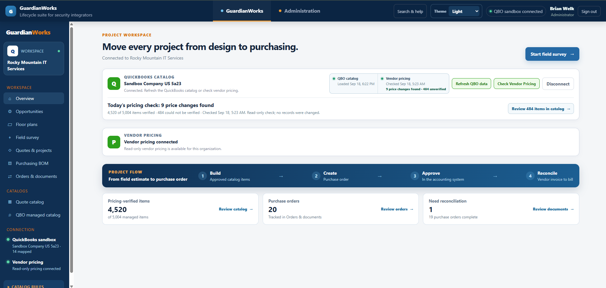
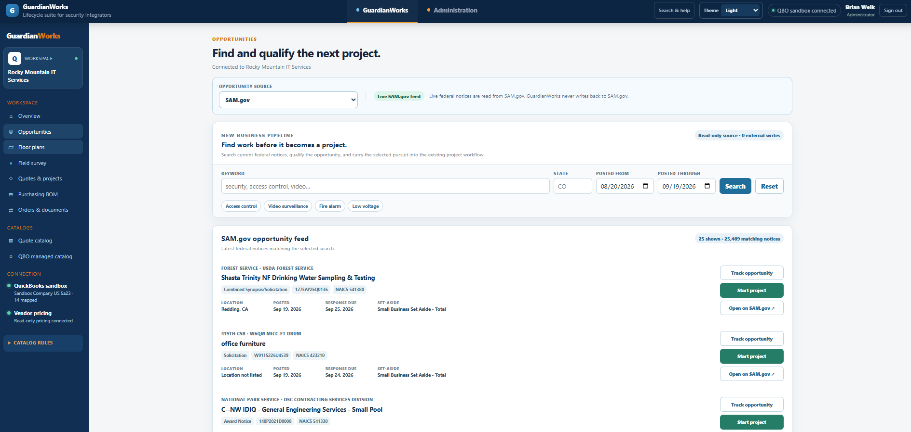
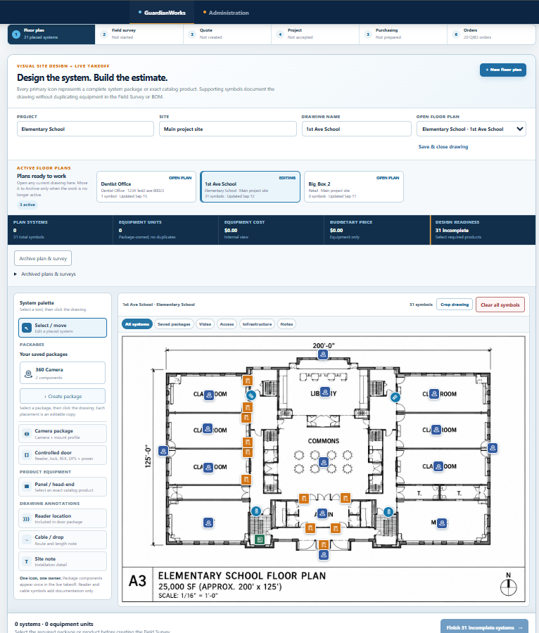
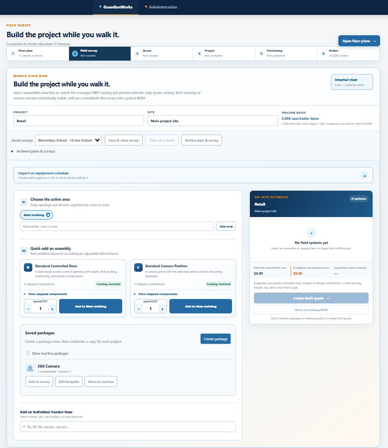
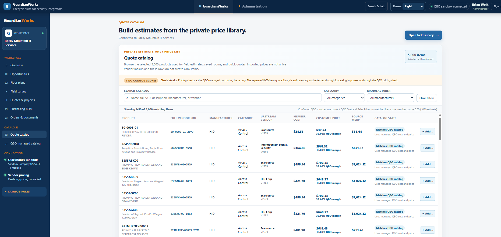
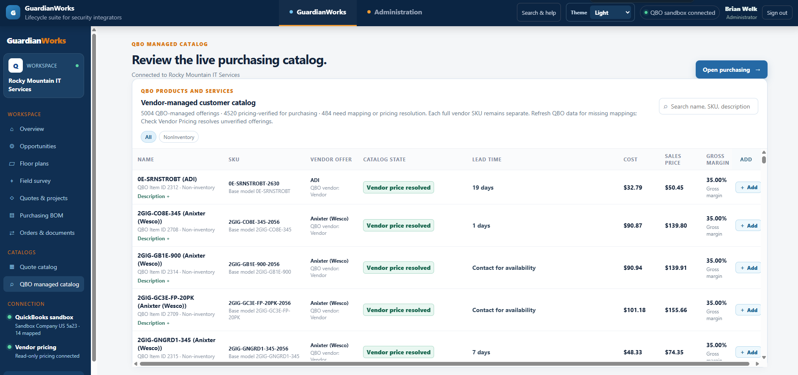
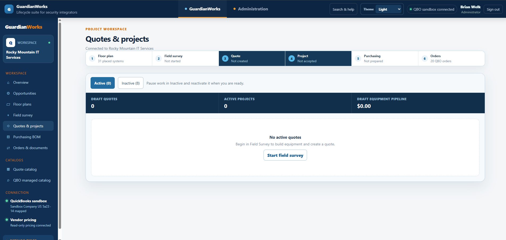
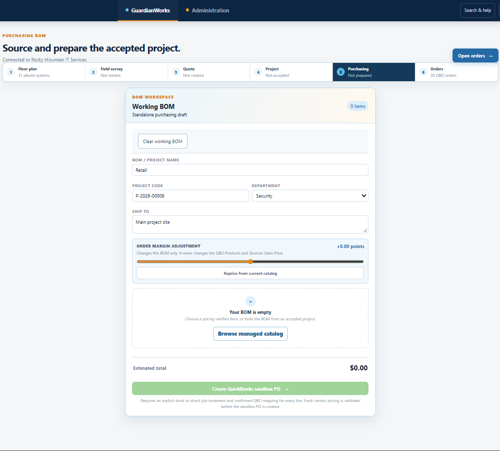
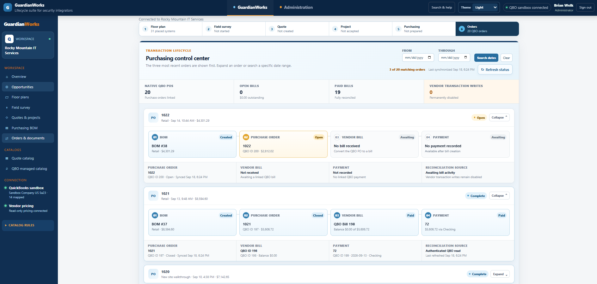

Opportunity-to-purchase operations platform
Channel Pricing Integration Lab
The current GuardianWorks build connects opportunity discovery, visual system design, field surveys, estimating catalogs, quoting, purchasing preparation, live pricing review, and accounting reconciliation in one project lifecycle.
- Role
- Product designer, workflow architect, and full-stack developer
- Platform
- Node.js, JavaScript, SQLite, REST integrations, and QuickBooks Online sandbox
- Controls
- Read-only upstream pricing, explicit review, and sandbox-only accounting writes

The operating problem
Keep project information intact as work moves between teams and systems.
Security integration projects can start with a bid opportunity, move to a floor plan and field survey, become a quote, and eventually turn into purchasing and accounting documents. When those stages live in separate tools, equipment identity, quantities, pricing assumptions, and project context are repeatedly re-entered.
The application is designed around continuity. The same project lineage moves from discovery through design and estimating into purchasing, while catalog and pricing rules determine what is ready for execution and what still requires human review.
Current workflow
From finding work to reconciling the purchase.
- Live read-only opportunity discovery with local tracking and project start actions
- Visual floor plans with reusable system packages and individually placed devices
- Field-survey workflow with saved packages, room/area organization, and CSV/XLSX equipment-schedule import
- Private 5,000-item estimate-only quote catalog for field estimates and budgetary pricing
- Separate QuickBooks-managed catalog for purchase-capable items and current vendor pricing
- Quote and project stages that preserve scope before purchasing preparation
- Purchasing BOM workspace with project coding, ship-to information, margin controls, and current-catalog repricing
- Native purchase-order, vendor-bill, payment, and reconciliation tracking from the accounting system
- Background pricing checks that identify changes without silently rewriting catalog data
Actual application screens
The current GuardianWorks workflow
Every screen below is from the current application build. The portfolio uses the actual interface rather than a recreated demo UI.








Catalog architecture
Estimating breadth is separated from purchasing authority.
One of the most important changes is the explicit split between the private quote catalog and the QuickBooks-managed catalog. The larger estimate library can support design and budgetary work even when an item is not yet mapped or pricing-verified for purchasing.
Before purchasing, the workflow moves back to the managed catalog and current vendor-pricing state. The overview shows the results of a read-only pricing check, including changed and unverified items, without automatically applying those changes.
Automation boundary
Prepare aggressively. Write conservatively.
The application automates searching, matching, project carry-forward, catalog comparison, pricing verification, document linking, and status refreshes. The controls become stricter as the workflow approaches a financial transaction.
Upstream vendor pricing remains read-only. The accounting connection shown in the portfolio is a QuickBooks sandbox, and transaction creation is presented as an explicit operator action rather than an automatic consequence of saving a quote or project.
Portfolio note